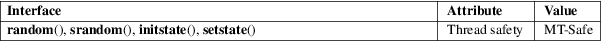

random, srandom, initstate, setstate − random number generator
Standard C library (libc, −lc)
#include <stdlib.h>
long
random(void);
void srandom(unsigned int seed);
char
*initstate(unsigned int seed, char
state[.n], size_t n);
char *setstate(char *state);
Feature Test Macro Requirements for glibc (see feature_test_macros(7)):
random(),
srandom(), initstate(), setstate():
_XOPEN_SOURCE >= 500
|| /* glibc >= 2.19: */ _DEFAULT_SOURCE
|| /* glibc <= 2.19: */ _SVID_SOURCE || _BSD_SOURCE
The random() function uses a nonlinear additive feedback random number generator employing a default table of size 31 long integers to return successive pseudo-random numbers in the range from 0 to 2^31 − 1. The period of this random number generator is very large, approximately 16 * ((2^31) − 1).
The srandom() function sets its argument as the seed for a new sequence of pseudo-random integers to be returned by random(). These sequences are repeatable by calling srandom() with the same seed value. If no seed value is provided, the random() function is automatically seeded with a value of 1.
The initstate() function allows a state array state to be initialized for use by random(). The size of the state array n is used by initstate() to decide how sophisticated a random number generator it should use—the larger the state array, the better the random numbers will be. Current "optimal" values for the size of the state array n are 8, 32, 64, 128, and 256 bytes; other amounts will be rounded down to the nearest known amount. Using less than 8 bytes results in an error. seed is the seed for the initialization, which specifies a starting point for the random number sequence, and provides for restarting at the same point.
The setstate() function changes the state array used by the random() function. The state array state is used for random number generation until the next call to initstate() or setstate(). state must first have been initialized using initstate() or be the result of a previous call of setstate().
The random() function returns a value between 0 and (2^31) − 1. The srandom() function returns no value.
The initstate() function returns a pointer to the previous state array. On failure, it returns NULL, and errno is set to indicate the error.
On success, setstate() returns a pointer to the previous state array. On failure, it returns NULL, and errno is set to indicate the error.
|
EINVAL |
The state argument given to setstate() was NULL. | ||
|
EINVAL |
A state array of less than 8 bytes was specified to initstate(). |
For an explanation of the terms used in this section, see attributes(7).

POSIX.1-2008.
POSIX.1-2001, 4.3BSD.
Random-number generation is a complex topic. Numerical Recipes in C: The Art of Scientific Computing (William H. Press, Brian P. Flannery, Saul A. Teukolsky, William T. Vetterling; New York: Cambridge University Press, 2007, 3rd ed.) provides an excellent discussion of practical random-number generation issues in Chapter 7 (Random Numbers).
For a more theoretical discussion which also covers many practical issues in depth, see Chapter 3 (Random Numbers) in Donald E. Knuth’s The Art of Computer Programming, volume 2 (Seminumerical Algorithms), 2nd ed.; Reading, Massachusetts: Addison-Wesley Publishing Company, 1981.
The random() function should not be used in multithreaded programs where reproducible behavior is required. Use random_r(3) for that purpose.
According to POSIX, initstate() should return NULL on error. In the glibc implementation, errno is (as specified) set on error, but the function does not return NULL.
getrandom(2), drand48(3), rand(3), random_r(3), srand(3)